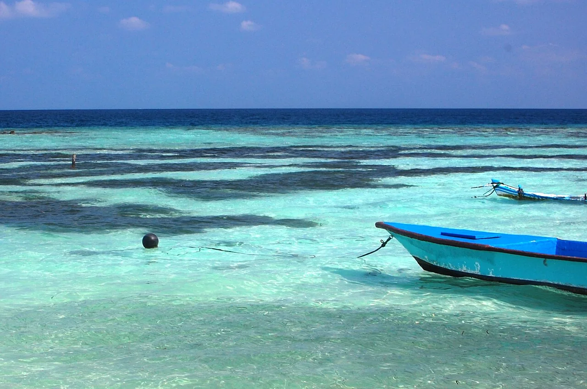

Maafushi — atoll de Malé Sud
Atoll de Malé Sud, Maldives · snorkeling, baignade

Île habitée de l’atoll de Malé Sud, à environ 26 km au sud de Malé (Wikipédia). Le Routard la décrit comme la plus grande et la plus développée des îles habitées de l’atoll, avec des hébergements, des restaurants, des boutiques et des plages aménagées pour les visiteurs. Sur l’atoll, les récifs sont souvent accessibles depuis la plage des îles locales.
- Lieu
- Atoll de Malé Sud, Maldives
- Niveau
- Variable selon les conditions
- Activités
- snorkeling, baignade
- Type d'eau
- Mer / océan
- Coordonnées
- 3.94, 73.49 (position approximative du secteur)
Dangers à connaître
- Dans les passes de l’atoll, les courants sont parfois forts (Routard).
Le conseil d'Ocean Buddy
Pour les plus beaux jardins de corail, prends une excursion en bateau. Une sortie populaire mène à un banc de sable (Routard).
Ouvrir dans Ocean Buddy Télécharger sur l'App Store
Source : Fiche Ocean Buddy · décembre 2026 · d’après le Routard et Wikipédia · à vérifier localement.